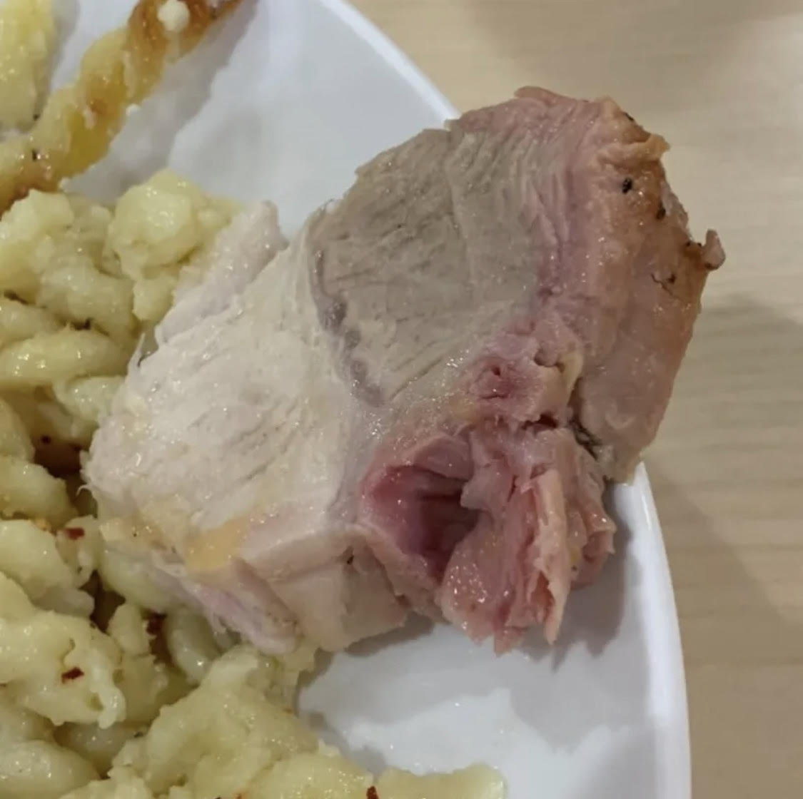

Welcome to Hell
This isn't what you were expecting, was it? Sure, the food may not look like much, but it'll keep you alive! Your chicken may look a bit pink but that's okay. COlorful food is healthier! There's always other options, like vegan soup and cardboard pizz. But hey, maybe tomorrow's food will be better!
If you have any food alergies or sensitivites, worry not! Carroll offers a gluten-free section with flavorless doughnuts, and soy milk for vegans who want that extra estrogen in their diet. If you have a poor pallete, then the STAC is the place for you.
Don't be foolish enough to try and opt out of eating this food. Carroll requires that you pay thousands of dollars, at $10 a meal, for this stuff.